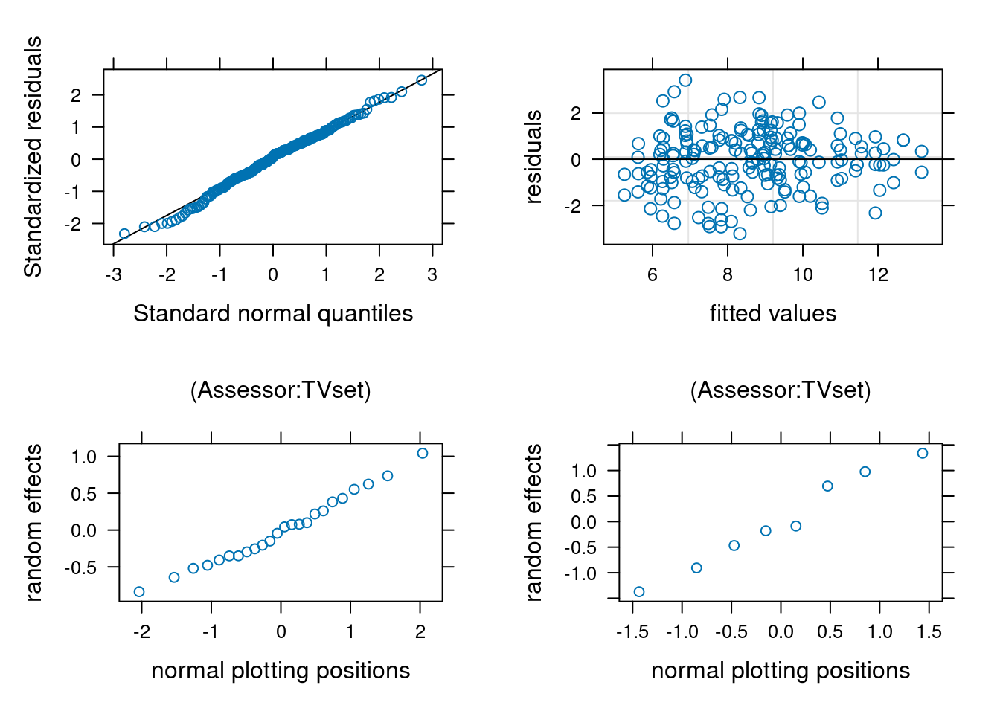

The following examples serves to illustrate the structure of experimental designs with both crossed and nested effects. The models are fitted specifying both random and fixed effects. We use the R package lme4 to estimate the coefficients of the resulting linear mixed effect model and lmerTest for additional testing features.
A word of caution: correctly formulating mixed models for complex experimental designs is far from trivial, and the correct interpretation of the output requires subject-matter expertise. Thus, rather than see the following sections as a definitive guide to doing such calculations on your own, it should be viewed as a way to acquire some terminology and intuition for speaking with a statistical consultant and formulating your needs, and gain familiarity for peer-reviewing purposes.
Example 1
We consider data from Danish company of electronics Bang and Olufsen from the lmerTest package (under data(TVbo)). The setup of the experiment is as follows: eight experienced raters (Assessor) were asked to rate 15 characteristics of televisions to compare two attributes, Picture and TVset.
Determining model structure
Based on this description alone, it is somewhat unclear what the structure of the experiment is. We can inspect the database.
We have three factors for the model: Assessor, TVset and Picture. There are seemingly two repetitions for ratings based on the factor level. Let us investigate the two manipulated factors, TVset and Picture, and look at the number of occurences for each combination
There are 16 measurements for each combination, something compatible with a repeated measure design in which each of the eight assessor gets to see all factors. Thus, Picture and TVset are crossed within-subject factors and the dataset is balanced. The contingency table shows that we can estimate interactions between TVset and Picture. Since we are not interested in individual assessors scores, we treat the factor as a random effect and any interaction with Assessor will also be treated as random.
Given that we have two replications per combination of TVset and Picture, we could in theory fit the three-way (random) effect by including the term (1 | Assessor:TVset:Picture). If we do so, the software gives a warning: boundary (singular) fit which indicates an estimated variance is exactly zero, a synonym in this example for overfitting. We thus remove the three-way interaction. However, the numerical routine fails to converge, showing zero estimated variance for Assessor:Picture. Thus, we refit the model without the three-way interaction (since it does not make sense to have a three-way interaction, but remove one of the two-way), and later refit another model without Assessor:Picture whose variability is still estimated to be zero. Sometimes, this may be due to poor starting value and we may try to change the default optimization algorithm, the problem persist.
Model formulation
Since there are 15 different response variables, we start with a single one, here Sharpness of the display. The model we fit is of the form
The first section of the summary table gives estimations of the standard deviation of each error term. There is little variability due to Assessor:Picture interaction. The most important part of this output is perhaps to look at the number of instances to make sure our design specification is correct. The model assumes (correctly) that there are 32 combinations of Assessor and Picture (8 by 4), 24 combinations of Assessor and TVset (8 by 3) and 8 combinations for Assessor.
Random effects:
Groups Name Variance Std.Dev.
Assessor:TVset (Intercept) 0.4909 0.7006
Assessor (Intercept) 1.0837 1.0410
Residual 1.9366 1.3916
Number of obs: 192, groups:
Assessor:TVset, 24; Assessor, 8
One of the main reason for using mixed models is to automatically account for the correlation between observations. If we fail to account for the dependence between ratings from the same assessor and their personal preferences, we will get standard errors for the estimated mean difference for the two fixed effect that are too small. Another popular option in finance and economics is use of so-called sandwich variance estimators to handle unequal variance and clustering. Among other, the sandwich package in R(Zeileis et al., 2020) offers multiple options should one decide on this avenue.
Figure 1 shows the structure of the correlation matrix of the ratings: the blocks corresponds to the eight assessors: measurements from different assessors are independent, but they are correlated within assessors as a result of specifying (multiple) random effects with assessors. Since there is more than one source of variability here, the pattern is different from equicorrelation, with additional correlations between if data are from the same TV set or same picture level.
Figure 1: Correlation structure for the linear mixed model fitted to the TVbo data
Testing
Before looking more in details at the output, let us see if the rating depends on the setting (TVset and Picture combination): if it did, we would have to basically compare all 12 combinations as a one-way analysis of variance model. In this context, the logical comparison would be to compute pairwise differences and check which are equivalent to the best combination.
Code
anova(mmod, ddf ="Kenward-Roger")
Type III Analysis of Variance Table with Kenward-Roger's method
Sum Sq Mean Sq NumDF DenDF F value Pr(>F)
TVset 90.869 45.435 2 14 23.4615 3.384e-05 ***
Picture 26.304 8.768 3 159 4.5276 0.004478 **
TVset:Picture 105.183 17.531 6 159 9.0524 1.634e-08 ***
---
Signif. codes: 0 '***' 0.001 '**' 0.01 '*' 0.05 '.' 0.1 ' ' 1
It is clear that there are differences all across the board. Constructing tests for mixed models in general is complicated and we need to correctly set up the model and compare the variability of the differences relative to the mean for each factor relative to different measures of variability. These will be the next random term that includes this factor and random effects (here either Assessor or the Error term). The correct source of variability are Assessor:TVset for TVset, Assessor:Picture for Picture and the error term for the two-way interaction between both fixed effects. Likewise, the degrees of freedom for the denominator are determined by the number of instances of the random term that involves the factor, so \(8 \times 3 - (1 - 2 - 7) = 14\) degrees of freedom since there are 24 instances of TVset:Assessor and we have to estimate one grand mean, two mean differences for TVset and likewise 7 effects for the Assessor.
This decomposition is better seen looking directly at the model output when fitted using aov (since this is a balanced within-subject design).
Code
fm <-aov( Coloursaturation ~ TVset * Picture +Error(Assessor/(Picture*TVset)), data = TVbo)
Pairwise comparisons
We can next look at the estimated marginal means to find the television sets and the picture with the best ratings.
All four best ratings are for TV set 2, with picture 4, 1, 2 and 3 (in decreasing order). We can see if these differences are significant by looking at all pairwise differences between combinations to find the best value. All of the differences in rating for TV set 2 could be attributed to noise after correcting for multiple testing using Tukey’s correction. The fifth top position is TV set 1, picture 4 and this one has a significantly lower rating (adjusted \(p\)-value of 0.0088) than the leading choice.
When we set up random effect terms, these are specified as being normal random variables. This has a shrinkage effect: predictions of the random effect model will tend to be closer to the mean than corresponding fixed, more so for larger values. In linear mixed models, we can retrieve predictions of random effects and plot them against theoretical normal plotting positions to see if they are in line with the assumption (as we did for residuals).
Code
library(lattice) # plots# plot residuals against fitted value (additivity / linearity)plot(mmod)# Normal quantile-quantile plot of residualsqqmath(mmod)# Normal quantile-quantile plots of random effect predictionsrandom <-ranef(mmod)plot(random)

As with other quantile-quantile plots, we expect the values to fall in line, which they seem to do here. There is one residual corresponding to a rating much below the average, but nothing to worry given the large sample size.
Example 2
We consider the data from Curley et al. (2022), who investigate the effect of anchoring and perception in a judicial system having three potential verdicts: guitly, not guilty and not proven.
The authors used a linear mixed effect model
For the final guilt scores, we conducted linear regressions with pre-trial bias (PJAQ) as a covariate and repeated measures for evidence anchor and vignette. We also included by-subject intercepts as a random effect.
Model structure
Code
# Load packageslibrary(lmerTest)library(emmeans)library(ggplot2)# Set up sum-to-zero constraint for factorsoptions(contrasts =c("contr.sum", "contr.poly"))data(C22, package ="hecedsm") # Load datastr(C22)
For each individual we see each pair of anchor once, but people are assigned to a single vignette. With only two measurements, no interaction is possible within participants. Likewise, we cannot have interaction between subject-effect and with anchor and verdict system (why?)
We thus include a single random effect, that for subject. Curley et al. (2022) fitted two models: one with all three way interactions between PJAQ (prior), vignette and anchor, the other with additive effects.
Since PJAQ is a continuous covariate, the interaction with vignette and anchor means that we expect the slope for PJAQ to be different for each group. This isn’t necessarily justified by any of the author’s hypotheses. If any interaction with the total pre-trial bias (PJAQ) is present, we would need to perform comparisons for different values of PJAQ.
Model fitting and tests
We fit the model without the interaction with PJAQ. Note that, using emmeans, it is better to center the covariate so that it’s average is zero, in which case comparisons are performed for this average value.
There appear to be no two-way or three-way interactions between any of the two factors and the covariate.
We can create an interaction plot to see what the estimated marginal means are for each of the four subconditions when the total pre-trial bias score is average.
There seems to be differences, but note the very large uncertainty (and that of difference would be larger than for the individual means). We can inspect the estimated parameters for the model coefficient and compute marginal means.
Code
summary(model2)
Linear mixed model fit by REML. t-tests use Satterthwaite's method [
lmerModLmerTest]
Formula: guilt ~ anchor * vignette + pjaq + (1 | id)
Data: C22_c
REML criterion at convergence: 1115.4
Scaled residuals:
Min 1Q Median 3Q Max
-1.98159 -0.47839 0.02203 0.48593 2.76710
Random effects:
Groups Name Variance Std.Dev.
id (Intercept) 3.472 1.863
Residual 2.129 1.459
Number of obs: 256, groups: id, 128
Fixed effects:
Estimate Std. Error df t value Pr(>|t|)
(Intercept) 8.18232 0.18826 125.00000 43.462 < 2e-16 ***
anchor1 0.25008 0.09119 126.00000 2.743 0.00699 **
vignette1 0.29655 0.09119 126.00000 3.252 0.00147 **
pjaq 0.08231 0.01938 125.00000 4.247 4.2e-05 ***
anchor1:vignette1 0.02823 0.18935 125.00000 0.149 0.88173
---
Signif. codes: 0 '***' 0.001 '**' 0.01 '*' 0.05 '.' 0.1 ' ' 1
Correlation of Fixed Effects:
(Intr) anchr1 vgntt1 pjaq
anchor1 0.000
vignette1 0.000 0.000
pjaq 0.000 0.000 0.000
anchr1:vgn1 0.000 0.000 0.000 -0.107
NOTE: Results may be misleading due to involvement in interactions
contrast estimate SE df t.ratio p.value
(weak-first) - (strong-first) 0.5 0.182 126 2.743 0.0070
Results are averaged over the levels of: vignette
Degrees-of-freedom method: kenward-roger
There is a strong correlation, 0.59 between the responses from the same individuals so failing to account for the subject-specific random effect would lead to misleading conclusions, as reported \(p\)-values would be much smaller than they should be.
The correlation between pre-trial bias score (PJAQ) and the guilt score is 0.32. The coefficient in the additive model is 0.08 with a standard error of 0.19, indicating a strong positive effect of pre-trial bias on the guilt score.
The anchor has a large impact, with the estimated difference weak-first vs strong-first of 5 points for the guilt score overall.
Example 3
We consider data from a study at Tech3Lab (Labonté-LeMoyne et al., 2020) on standing desks. The description from the abstract reads
Thirty-seven young and healthy adults performed eight cognitive tasks in a 2 × 2 × 2 within-subject design of the following independent variables: posture (sitting/standing), task difficulty (easy/hard), and input device (computer mouse/tactile screen) in a counterbalanced order.
The database LJLSFBM20 in package hecedsm contains the measurements. There is a total of 296 measurements, or \(37 \times 8\), meaning each participant is assigned to a single task.
The id variable is a dummy for the participant, with associated covariate sex and bmi. We also have the three within-subject factors, position, phys_demand and task_diff and the order in which the tasks were given (counterbalanced). There are in total seven response variables: the inverse efficiency score global stimulus (ies), measures of brain activity (central_alpha, parietal_alpha, central_beta, parietal_beta) and two scales obtained from answers to a questionaire, attention and satisfaction.
The three manipulated factors are nested within subject and crossed, so we can estimate the three-way and two-way interactions with the experimental factors. The only logical random effect here is for subject, and we cannot have further sources of variability given the lack of replication.
The authors are not transparent as to what their model is and earns a failure grade for reproducibility: we have no idea of the specification, coefficients are not reported. There is clearly 8 coefficiens corresponding to the average of the subgroups, plus a random effect for subject and sex and body mass index as covariates. It appears from the output of Table 1 that there was an interaction term added for BMI and position (as standing may be more strenuous on overweight participants). Finally, we include the order of the tasks as a covariate to account for potential fatigue effects.
Model adjustment and testing
Our linear mixed model would take the form, here with ies as response
Code
library(lmerTest)mod <-lmer(ies ~ position*phys_demand*task_diff + (1| id) + sex + bmi*position + order, data = LJLSFBM20)
Given the number of response variables and coefficients, it is clear one must account for testing multiplicity. Figuring out the size of the family, \(m\), is not trivial: testing interactions and main effects leads to 7 tests. We could also be interested in the interaction between body mass index and position if it affects performance, bringing the number of tests to 8 and throw the covariate effect for order (up to 11 if we include all controls). Further contrasts may inflate this number (for example, there are 28 pairwise comparisons if the three-way interaction is significant). With seven responses and linear mixed models parametrized in the same way, we have at least 56 tests and potentially up to 350! Controlling the type-I error requires using Bonferroni–Holm type correction, since the different responses are not part of the same models.
Code
anova(mod)
Type III Analysis of Variance Table with Satterthwaite's method
Sum Sq Mean Sq NumDF DenDF F value
position 574983 574983 1 250 0.0361
phys_demand 1280635446 1280635446 1 250 80.3464
task_diff 4927991208 4927991208 1 250 309.1796
sex 79185574 79185574 1 34 4.9681
bmi 10365621 10365621 1 34 0.6503
order 105580125 105580125 1 250 6.6240
position:phys_demand 9127601 9127601 1 250 0.5727
position:task_diff 1825943 1825943 1 250 0.1146
phys_demand:task_diff 327914741 327914741 1 250 20.5732
position:bmi 1224778 1224778 1 250 0.0768
position:phys_demand:task_diff 2299196 2299196 1 250 0.1443
Pr(>F)
position 0.84952
phys_demand < 2.2e-16 ***
task_diff < 2.2e-16 ***
sex 0.03254 *
bmi 0.42560
order 0.01064 *
position:phys_demand 0.44992
position:task_diff 0.73530
phys_demand:task_diff 8.913e-06 ***
position:bmi 0.78185
position:phys_demand:task_diff 0.70441
---
Signif. codes: 0 '***' 0.001 '**' 0.01 '*' 0.05 '.' 0.1 ' ' 1
If we focus on the sole results for ies, there is a significant two-way interaction (and main effects) for phys_demand and task_diff, but not for position. Further investigation would reveal better performance on the easy task and overall with a mouse.
One may wonder whether there are any effect of spillover, learning or fatigue due to the repeated measures: tasks were much longer than is typical. The coefficient for order is -268.14, so the decrease for the inverse efficiency score global stimulus for each additional task, ceteris paribus, with a \(p\)-value of 0.011 suggesting participants improve over time.
Code
library(ggplot2)g1 <-ggplot(data =data.frame(residuals =resid(mod), id = LJLSFBM20$id),mapping =aes(x = id, y = residuals)) +geom_point() +theme_classic()g2 <-ggplot(data =data.frame(residuals =resid(mod), order = LJLSFBM20$order),mapping =aes(x = order, y = residuals)) +geom_point() +theme_classic()library(patchwork) # combine resultsg1 + g2
Figure 2: Scatterplots of residuals from the linear mixed model against participant identifier (left) and against order of task (right).
Looking at the residuals of the model per participants is also quite insightful. It is clear that measurements from participants 30 and 31 are abnormal, and these correspond to the values we see.
We can check the other model assumptions: the quantile-quantile plot of random effects suggests some large outliers, unsurprisingly due to the participants identified. The plot of fitted values vs residuals suggests our model is wholly inadequate: there is a clear trend in the residuals and strong evidence of heterogeneity.
Code
plot(ranef(mod))plot(mod)
Figure 3: Normal quantile-quantile plot of predicted random effects (left) and Tukey’s plot of residual vs fitted values (right).
We could fit a more complex model to tackle the heterogeneity issue by including different variance per individual, at the expense of lower power.
References
Curley, L. J., Murray, J., MacLean, R., Munro, J., Lages, M., Frumkin, L. A., Laybourn, P., & Brown, D. (2022). Verdict spotting: Investigating the effects of juror bias, evidence anchors and verdict system in jurors. Psychiatry, Psychology and Law, 29(3), 323–344. https://doi.org/10.1080/13218719.2021.1904450
Labonté-LeMoyne, E., Jutras, M.-A., Léger, P.-M., Sénécal, S., Fredette, M., Begon, M., & Mathieu, M.-È. (2020). Does reducing sedentarity with standing desks hinder cognitive performance? Human Factors, 62(4), 603–612. https://doi.org/10.1177/0018720819879310
Zeileis, A., Köll, S., & Graham, N. (2020). Various versatile variances: An object-oriented implementation of clustered covariances in R. Journal of Statistical Software, 95(1), 1–36. https://doi.org/10.18637/jss.v095.i01
Source Code
---title: "Linear mixed models"type: docseditor_options: chunk_output_type: console---```{r slides-videos, echo=FALSE, include=FALSE}options(knitr.kable.NA ='')```The following examples serves to illustrate the structure of experimental designs with both crossed and nested effects. The models are fitted specifying both random and fixed effects. We use the **R** package `lme4` to estimate the coefficients of the resulting linear mixed effect model and `lmerTest` for additional testing features.A word of caution: correctly formulating mixed models for complex experimental designs is far from trivial, and the correct interpretation of the output requires subject-matter expertise. Thus, rather than see the following sections as a definitive guide to doing such calculations on your own, it should be viewed as a way to acquire some terminology and intuition for speaking with a statistical consultant and formulating your needs, and gain familiarity for peer-reviewing purposes.# Example 1We consider data from Danish company of electronics Bang and Olufsen from the `lmerTest` package (under `data(TVbo)`). The setup of the experiment is as follows: eight experienced raters (`Assessor`) were asked to rate 15 characteristics of televisions to compare two attributes, `Picture` and `TVset`.## Determining model structureBased on this description alone, it is somewhat unclear what the structure of the experiment is. We can inspect the database.```{r}#| message: false#| warning: false#| echo: truelibrary(lmerTest)data(TVbo)str(TVbo)```We have three factors for the model: `Assessor`, `TVset` and `Picture`. There are seemingly two repetitions for ratings based on the factor level. Let us investigate the two manipulated factors, `TVset` and `Picture`, and look at the number of occurences for each combination```{r}xtabs(~ TVset + Picture, data = TVbo)```There are 16 measurements for each combination, something compatible with a repeated measure design in which each of the eight assessor gets to see all factors. Thus, `Picture` and `TVset` are crossed within-subject factors and the dataset is balanced. The contingency table shows that we can estimate interactions between `TVset` and `Picture`. Since we are not interested in individual assessors scores, we treat the factor as a random effect and any interaction with `Assessor` will also be treated as random. Given that we have two replications per combination of `TVset` and `Picture`, we could in theory fit the three-way (random) effect by including the term `(1 | Assessor:TVset:Picture)`. If we do so, the software gives a warning: `boundary (singular) fit` which indicates an estimated variance is exactly zero, a synonym in this example for overfitting. We thus remove the three-way interaction. However, the numerical routine fails to converge, showing zero estimated variance for `Assessor:Picture`. Thus, we refit the model without the three-way interaction (since it does not make sense to have a three-way interaction, but remove one of the two-way), and later refit another model without `Assessor:Picture` whose variability is still estimated to be zero. Sometimes, this may be due to poor starting value and we may try to change the default optimization algorithm, the problem persist. ## Model formulationSince there are 15 different response variables, we start with a single one, here `Sharpness` of the display. The model we fit is of the form\begin{align*}Y_{ijkl} = \mu + \alpha_i + \beta_j + (\alpha\beta)_{ij} + \gamma_k + (\beta\gamma)_{jk} + \varepsilon_{ijkl},\end{align*}where- $Y_{ijkl}$ is the `Sharpness` rating for the $i$th `TVset`, the $j$th `Picture`, the $k$th assessor and the $l$th replication.- $\mu$ is the global average of all ratings- $\alpha_i$ is the mean different for the $i$th `TVset`- $\beta_j$ is the mean different for the $j$th `Picture`- $(\alpha\beta)_{ij}$ is the interaction for the $i$th `TVset` and $j$th `Picture`.- $\gamma_k \sim \mathsf{No}(0, \sigma^2_\gamma)$ is the random effect of assessors- $(\alpha\gamma)_{ik} \sim \mathsf{No}(0, \sigma^2_{\alpha\gamma})$ are random effects for assessors for television sets- $\varepsilon_{ijkl} \sim \mathsf{No}(0, \sigma^2_\varepsilon)$ are measurements-specific error termsAll of the random effects, including error, are independent of one another.```{r}#| echo: true#| eval: truemmod <-lmer( Sharpness ~ TVset * Picture + (1| Assessor) +# (1 | Assessor:Picture) +# (1 | Assessor:TVset:Picture) + (1| Assessor:TVset) ,# control = lmerControl(optimizer = "bobyqa"),## 'control' above for the optimization routinedata = TVbo)# summary(mmod)```## Correlation structureThe first section of the summary table gives estimations of the standard deviation of each error term. There is little variability due to `Assessor:Picture` interaction. The most important part of this output is perhaps to look at the number of instances to make sure our design specification is correct. The model assumes (correctly) that there are 32 combinations of `Assessor` and `Picture` (8 by 4), 24 combinations of `Assessor` and `TVset` (8 by 3) and 8 combinations for `Assessor`. ```Random effects: Groups Name Variance Std.Dev. Assessor:TVset (Intercept) 0.4909 0.7006 Assessor (Intercept) 1.0837 1.0410 Residual 1.9366 1.3916 Number of obs: 192, groups: Assessor:TVset, 24; Assessor, 8```One of the main reason for using mixed models is to automatically account for the correlation between observations. If we fail to account for the dependence between ratings from the same assessor and their personal preferences, we will get standard errors for the estimated mean difference for the two fixed effect that are **too small**. Another popular option in finance and economics is use of so-called sandwich variance estimators to handle unequal variance and clustering. Among other, the [`sandwich`](https://doi.org/10.18637/jss.v095.i01) package in **R** [@sandwich:2020] offers multiple options should one decide on this avenue.@fig-tvbocorr shows the structure of the correlation matrix of the ratings: the blocks corresponds to the eight assessors: measurements from different assessors are independent, but they are correlated within assessors as a result of specifying (multiple) random effects with assessors. Since there is more than one source of variability here, the pattern is different from equicorrelation, with additional correlations between if data are from the same TV set or same picture level.```{r}#| fig-cap: "Correlation structure for the linear mixed model fitted to the `TVbo` data"#| label: fig-tvbocorr#| eval: true#| echo: falserescov <- hecstatmod::rescov(mmod)plot(rescov)```## TestingBefore looking more in details at the output, let us see if the rating depends on the setting (`TVset` and `Picture` combination): if it did, we would have to basically compare all 12 combinations as a one-way analysis of variance model. In this context, the logical comparison would be to compute pairwise differences and check which are equivalent to the best combination.```{r}anova(mmod, ddf ="Kenward-Roger")```It is clear that there are differences all across the board. Constructing tests for mixed models in general is complicated and we need to correctly set up the model and compare the variability of the differences relative to the mean for each factor relative to different measures of variability. These will be the next random term that includes this factor and random effects (here either `Assessor` or the `Error` term). The correct source of variability are `Assessor:TVset` for `TVset`, `Assessor:Picture` for `Picture` and the error term for the two-way interaction between both fixed effects. Likewise, the degrees of freedom for the denominator are determined by the number of instances of the random term that involves the factor, so $8 \times 3 - (1 - 2 - 7) = 14$ degrees of freedom since there are 24 instances of `TVset:Assessor` and we have to estimate one grand mean, two mean differences for `TVset` and likewise 7 effects for the `Assessor`.This decomposition is better seen looking directly at the model output when fitted using `aov` (since this is a balanced within-subject design).```{r}#| eval: falsefm <-aov( Coloursaturation ~ TVset * Picture +Error(Assessor/(Picture*TVset)), data = TVbo)```## Pairwise comparisonsWe can next look at the estimated marginal means to find the television sets and the picture with the best ratings. ```{r}library(emmeans)emm <- mmod |>emmeans(spec =c("TVset","Picture"))```All four best ratings are for TV set 2, with picture 4, 1, 2 and 3 (in decreasing order). We can see if these differences are significant by looking at all pairwise differences between combinations to find the best value. All of the differences in rating for TV set 2 could be attributed to noise after correcting for multiple testing using Tukey's correction. The fifth top position is TV set 1, picture 4 and this one has a significantly lower rating (adjusted $p$-value of 0.0088) than the leading choice.```{r}emmemm |>pairs()```## Checking model assumptionsWhen we set up random effect terms, these are specified as being normal random variables. This has a **shrinkage effect**: predictions of the random effect model will tend to be closer to the mean than corresponding fixed, more so for larger values. In linear mixed models, we can retrieve predictions of random effects and plot them against theoretical normal plotting positions to see if they are in line with the assumption (as we did for residuals).```{r}#| eval: false#| echo: truelibrary(lattice) # plots# plot residuals against fitted value (additivity / linearity)plot(mmod)# Normal quantile-quantile plot of residualsqqmath(mmod)# Normal quantile-quantile plots of random effect predictionsrandom <-ranef(mmod)plot(random)``````{r}#| echo: false#| eval: truelibrary(lattice)plots <-plot(ranef(mmod))plots[[1]]$xlab <-c("normal plotting positions")plots[[2]]$xlab <-c("normal plotting positions")plots[[1]]$ylab <-c("random effects")plots[[2]]$ylab <-c("random effects")plots[[1]]$xlab.top <-"(Assessor:TVset)"plots[[2]]$xlab.top <-"(Assessor:TVset)"print(qqmath(mmod), split =c(1, 1, 2,2), more =TRUE)print(plot(mmod, xlab ="fitted values", ylab ="residuals"), split =c(2, 1, 2, 2), more =TRUE)print(plots[[1]], split =c(1, 2, 2, 2), more =TRUE)print(plots[[2]], split =c(2, 2, 2, 2), more =FALSE)```As with other quantile-quantile plots, we expect the values to fall in line, which they seem to do here. There is one residual corresponding to a rating much below the average, but nothing to worry given the large sample size.# Example 2We consider the data from @Curley:2021, who investigate the effect of anchoring and perception in a judicial system having three potential verdicts: guitly, not guilty and not proven. The authors used a linear mixed effect model > For the final guilt scores, we conducted linear regressions with pre-trial bias (PJAQ) as a covariate and repeated measures for evidence anchor and vignette. We also included by-subject intercepts as a random effect.## Model structure```{r}# Load packageslibrary(lmerTest)library(emmeans)library(ggplot2)# Set up sum-to-zero constraint for factorsoptions(contrasts =c("contr.sum", "contr.poly"))data(C22, package ="hecedsm") # Load datastr(C22)# How are conditions manipulated?with(C22, xtabs(~ vignette + id))with(C22, xtabs(~ vignette + anchor))with(C22, xtabs(~ anchor + id))```For each individual we see each pair of anchor once, but people are assigned to a single vignette. With only two measurements, no interaction is possible within participants. Likewise, we cannot have interaction between subject-effect and with anchor and verdict system (why?)We thus include a single random effect, that for subject. @Curley:2021 fitted two models: one with all three way interactions between PJAQ (`prior`), vignette and anchor, the other with additive effects. Since PJAQ is a continuous covariate, the interaction with vignette and anchor means that we expect the slope for PJAQ to be different for each group. This isn't necessarily justified by any of the author's hypotheses. If any interaction with the total pre-trial bias (PJAQ) is present, we would need to perform comparisons for different values of PJAQ. ## Model fitting and testsWe fit the model without the interaction with PJAQ. Note that, using `emmeans`, it is better to center the covariate so that it's average is zero, in which case comparisons are performed for this average value.```{r}C22_c <- C22 |> dplyr::mutate(pjaq =scale(prior, scale =FALSE),guilt = guilt /10) # scale from 0 to 14model1 <-lmer( guilt ~ anchor*vignette*pjaq + (1| id),data = C22_c)model2 <-lmer( guilt ~ anchor*vignette + pjaq + (1| id),data = C22_c)```Now that we have model coefficients, we can test the models. First, we check if the slope is the same for each of the four subgroups```{r}# Type III ANOVA from lmerTestanova(model1, model2)```There appear to be no two-way or three-way interactions between any of the two factors and the covariate.We can create an interaction plot to see what the estimated marginal means are for each of the four subconditions when the total pre-trial bias score is average. ```{r}library(ggplot2)# Interaction plotemmip(model2, formula = anchor ~ vignette, CIs =TRUE) +theme_classic() +theme(legend.position ="bottom")```There seems to be differences, but note the very large uncertainty (and that of difference would be larger than for the individual means). We can inspect the estimated parameters for the model coefficient and compute marginal means.```{r}summary(model2)emmeans(model2, spec ="anchor") |>contrast(method ="pairwise")```There is a strong correlation, `r round(330.0/(330.0 + 227.1), 2)` between the responses from the same individuals so failing to account for the subject-specific random effect would lead to misleading conclusions, as reported $p$-values would be much smaller than they should be.The correlation between pre-trial bias score (PJAQ) and the guilt score is `r round(with(C22, cor(prior,guilt)),2)`. The coefficient in the additive model is `r round(as.numeric(fixef(model2)['pjaq']), 2)` with a standard error of 0.19, indicating a strong positive effect of pre-trial bias on the guilt score.The anchor has a large impact, with the estimated difference weak-first vs strong-first of 5 points for the guilt score overall.# Example 3We consider data from a study at Tech3Lab [@LabonteLemoyne:2020] on standing desks. The description from the abstract reads> Thirty-seven young and healthy adults performed eight cognitive tasks in a 2 × 2 × 2 within-subject design of the following independent variables: posture (sitting/standing), task difficulty (easy/hard), and input device (computer mouse/tactile screen) in a counterbalanced order.The database `LJLSFBM20` in package `hecedsm` contains the measurements. There is a total of `r 37*8` measurements, or $37 \times 8$, meaning each participant is assigned to a single task. ```{r}data(LJLSFBM20, package ="hecedsm")str(LJLSFBM20)```## Model structureThe `id` variable is a dummy for the participant, with associated covariate `sex` and `bmi`. We also have the three within-subject factors, `position`, `phys_demand` and `task_diff` and the `order` in which the tasks were given (counterbalanced). There are in total seven response variables: the inverse efficiency score global stimulus (`ies`), measures of brain activity (`central_alpha`, `parietal_alpha`, `central_beta`, `parietal_beta`) and two scales obtained from answers to a questionaire, `attention` and `satisfaction`. The three manipulated factors are nested within subject and crossed, so we can estimate the three-way and two-way interactions with the experimental factors. The only logical random effect here is for subject, and we cannot have further sources of variability given the lack of replication.The authors are not transparent as to what their model is and earns a failure grade for reproducibility: we have no idea of the specification, coefficients are not reported. There is clearly 8 coefficiens corresponding to the average of the subgroups, plus a random effect for subject and sex and body mass index as covariates. It appears from the output of Table 1 that there was an interaction term added for BMI and position (as standing may be more strenuous on overweight participants). Finally, we include the order of the tasks as a covariate to account for potential fatigue effects.## Model adjustment and testingOur linear mixed model would take the form, here with `ies` as response```{r}library(lmerTest)mod <-lmer(ies ~ position*phys_demand*task_diff + (1| id) + sex + bmi*position + order, data = LJLSFBM20) ```Given the number of response variables and coefficients, it is clear one must account for testing multiplicity. Figuring out the size of the family, $m$, is not trivial: testing interactions and main effects leads to 7 tests. We could also be interested in the interaction between body mass index and position if it affects performance, bringing the number of tests to 8 and throw the covariate effect for order (up to 11 if we include all controls). Further contrasts may inflate this number (for example, there are 28 pairwise comparisons if the three-way interaction is significant). With seven responses and linear mixed models parametrized in the same way, we have at least 56 tests and potentially up to 350! Controlling the type-I error requires using Bonferroni--Holm type correction, since the different responses are not part of the same models.```{r}#| eval: true#| echo: trueanova(mod)```If we focus on the sole results for `ies`, there is a significant two-way interaction (and main effects) for `phys_demand` and `task_diff`, but not for `position`. Further investigation would reveal better performance on the easy task and overall with a mouse.```{r}#| eval: true#| echo: trueemmeans::emmeans(mod, spec =c("phys_demand","task_diff"))```## Model assumptionsOne may wonder whether there are any effect of spillover, learning or fatigue due to the repeated measures: tasks were much longer than is typical. The coefficient for `order` is `r round(as.numeric(fixef(mod)['order']), 2)`, so the decrease for the inverse efficiency score global stimulus for each additional task, *ceteris paribus*, with a $p$-value of `r round(anova(mod)[6,6], 3)` suggesting participants improve over time.```{r}#| label: fig-residualsvscovariate#| fig-cap: "Scatterplots of residuals from the linear mixed model against participant identifier (left) and against order of task (right)."library(ggplot2)g1 <-ggplot(data =data.frame(residuals =resid(mod), id = LJLSFBM20$id),mapping =aes(x = id, y = residuals)) +geom_point() +theme_classic()g2 <-ggplot(data =data.frame(residuals =resid(mod), order = LJLSFBM20$order),mapping =aes(x = order, y = residuals)) +geom_point() +theme_classic()library(patchwork) # combine resultsg1 + g2```Looking at the residuals of the model per participants is also quite insightful. It is clear that measurements from participants 30 and 31 are abnormal, and these correspond to the values we see.We can check the other model assumptions: the quantile-quantile plot of random effects suggests some large outliers, unsurprisingly due to the participants identified. The plot of fitted values vs residuals suggests our model is wholly inadequate: there is a clear trend in the residuals and strong evidence of heterogeneity.```{r}#| eval: false#| echo: trueplot(ranef(mod))plot(mod)``````{r}#| label: fig-residualsStanding#| fig-cap: "Normal quantile-quantile plot of predicted random effects (left) and Tukey's plot of residual vs fitted values (right)."#| eval: true#| echo: false# g1 <- car::qqPlot(unlist(ranef(mod)), # id = FALSE, # xlab = "theoretical normal quantile", # ylab = "observed quantile")g1 <-plot(ranef(mod))g1[[1]]$xlab <-"theoretical normal quantile"g1[[1]]$ylab <-"observed quantile"g2 <-plot(mod)g2$xlab <-"fitted values"g2$ylab <-"residuals"cowplot::plot_grid(g1[[1]], g2,ncol =2,hjust =-1.5)```We could fit a more complex model to tackle the heterogeneity issue by including different variance per individual, at the expense of lower power.